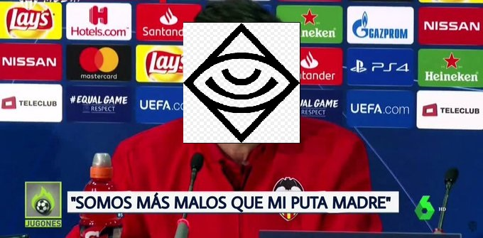

Primera Victoria para Guasones
Este equipos (por llamarlo de alguna manera) consigue su primera victoria despues de 7 jornadas contra otro equipo que no se jugaba nada...
Son muy malos , no voy a desarrollar más.
| LFL | Ligas Nacionales | PLPD |
| Posicion | Equipos | Partidos |
| 1º | BISONS ECLUB | 13-5 |
| 2º | Movistar Riders | 12-6 |
| 3º | Los Heretics | 12-6 |
| 4º | Barça eSports | 11-7 |
| 5º | Giants | 10-8 |
| 6º | Firenetwork KOI | 8-10 |
| 7º | Rebels Gaming | 8-10 |
| 8º | UCAM Tokiers | 7-11 |
| 9º | Fnatic TQ | 5-13 |
| 10º | Guasones | 4-14 |
| Posicion | Prize Pool | Equipos | Clasificados para EMEA masters |
| 1º | 8,000€ | Movistar Riders | Si |
| 2º | 5,000€ | BISONS ECLUB | Si |
| 3º | 3,000€ | Firenetwork KOI | X |
| 4º | 2,000€ | Giants | X |
| 5º | 1,000€ | Los Heretics | X |
| 6º | 1,000€ | Barça eSports | X |
Son muy malos , no voy a desarrollar más.
El hecho de que a día 26 de septiembre nadie haya cobrado aún lo del mes pasado ya es alarmante por sí solo. Jugadores, creadores de contenido y staff está sin sueldo y sin ningún tipo de explicación clara sobre por qué están las cosas así. Es preocupante que un club que apenas tiene un año de vida (no ha llegado ni al aniversario) se encuentre ya en este estado. De hecho, según han comentado varias fuentes de DexertoES, el problema con el salario en Bisons se lleva dando desde el principio. Todo el mundo ha sufrido retrasos en los pagos desde el primer momento, según nos explican.
Tras una trepidante serie al mejor de 5 giants pierde su partido contra Firenetwork KOI en el que solo consiguen una victoria desde el lado azul (supuestamente el lado facil del juego). Nadie esperaba este resultado puesto que durante la fase regular los "gigantes" ya ganaron a KOI en sus respectivos partidos y no consiguen el paso a las semifinales, la tercera plaza y paso a la final se decidira entre Firenetwork KOI y BISONS.